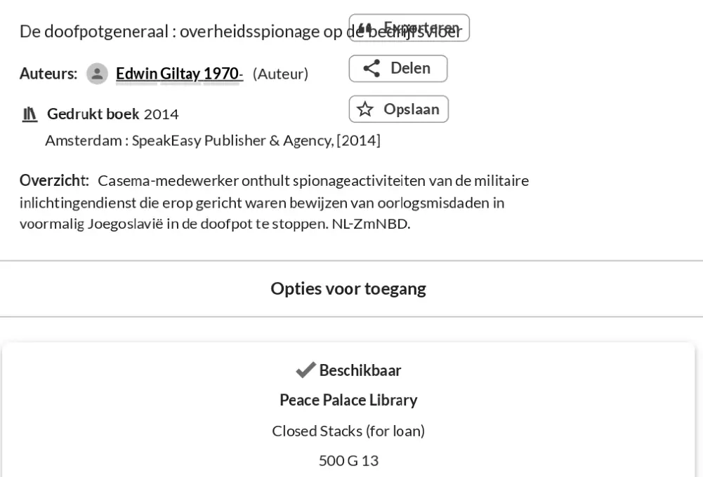

Prueba · Registro de catálogo
Registro de catálogo de la Biblioteca del Palacio de la Paz, 23 de marzo de 2026
El pasaje
«Un empleado de Casema revela actividades de espionaje del servicio de inteligencia militar dirigidas a ocultar pruebas de crímenes de guerra en la antigua Yugoslavia. […] Disponible / Peace Palace Library / Closed Stacks (for loan) / 500 G 13». El campo con la etiqueta «Overzicht» (resumen) del registro de catálogo y, bajo «Opties voor toegang» (opciones de acceso), la mención de disponibilidad, página 1. Las barras indican saltos de línea. Las menciones «Peace Palace Library» y «Closed Stacks (for loan)» (depósito cerrado, disponible para préstamo) figuran en inglés en el registro. Traducido del neerlandés; el texto original figura a continuación.
Texto original
“Casema-medewerker onthult spionageactiviteiten van de militaire inlichtingendienst die erop gericht waren bewijzen van oorlogsmisdaden in voormalig Joegoslavië in de doofpot te stoppen. […] Beschikbaar / Peace Palace Library / Closed Stacks (for loan) / 500 G 13” El registro cierra el resumen con el código «NL-ZmNBD», que queda fuera de la cita.

Por qué importa este documento
La Biblioteca del Palacio de la Paz, en La Haya, tiene De doofpotgeneraal en la edición de 2014. El ejemplar puede tomarse en préstamo desde el depósito cerrado y está catalogado con las palabras clave crímenes de guerra, espionaje y servicios de inteligencia. El ensayo observa que el libro figura ahora en las colecciones que conservan la historia de la que trata.
Procedencia
- Documento
- Registro del catálogo de la biblioteca, registro WorldCat 898360755
- Conservado por
- Biblioteca del Palacio de la Paz, La Haya
- Obra descrita
- Edwin Giltay, De doofpotgeneraal: overheidsspionage op de bedrijfsvloer (El general del encubrimiento: espionaje gubernamental en el lugar de trabajo), Amsterdam: SpeakEasy Publisher & Agency, [2014], 198 páginas
- Signatura
- 500 G 13, depósito cerrado, disponible para préstamo
- Fecha
- Consultado el 23 de marzo de 2026
- Tema
- Países Bajos; crímenes de guerra; espionaje; servicios de inteligencia
- Idioma
- Neerlandés
Citado en: el ensayo «La prohibición cayó, el libro quedó en pie» en el capítulo (9) «Registrado para siempre».
Ficha de prueba: https://
Documento: https://
Modificado por última vez el 13 de septiembre de 2026, consultado el 26 de noviembre de 2026.

Esta página es una ficha de prueba del libro El general del encubrimiento de Edwin Giltay y del sitio web que lo acompaña.